Filtros Digitais do Tipo IIR (Infinite Impulse Response)
Prof. Marcos Rogério Fernandes
09 de junho de 2026
Objetivos
Os objetivos teóricos desta aula são compreender:
- A definição dos filtros IIR (Infinite Impulse Response);
- A representação matemática (equação de diferenças e função de transferência);
- Análise de estabilidade (polos e o círculo unitário);
- Estruturas de realização em diagramas de blocos (Formas Diretas);
- Métodos clássicos de projeto (Butterworth, Chebyshev e Elíptico);
- Comparação com filtros FIR (Vantagens e Desvantagens).
O que é um Filtro Digital?
No processamento digital de sinais, um filtro é um sistema que:
- É Linear e Invariante no Tempo (LIT) discreto no tempo.
- Modifica as características espectrais (amplitude e fase) de um sinal de entrada $x[k]$.
- Produz um sinal de saída processado $y[k]$ com as frequências desejadas.
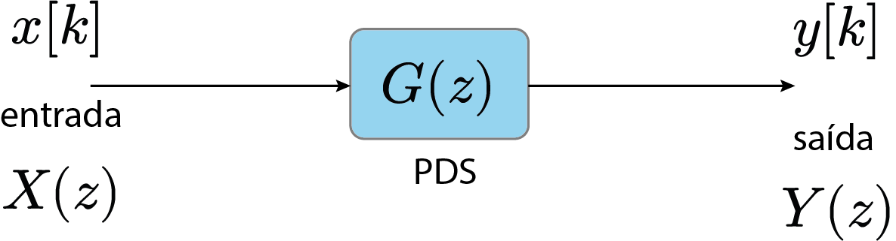
Sinal com ruído
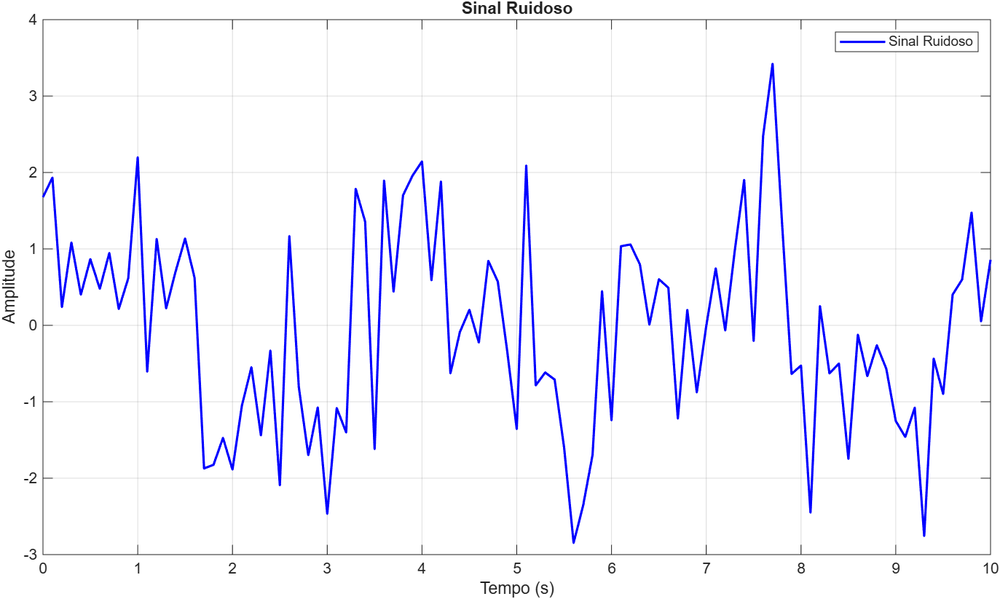
Filtros Digitais
Os filtros digitais são classificados de acordo com a duração de sua resposta ao impulso:
- FIR (Finite Impulse Response): Resposta ao impulso tem duração finita (sem realimentação).
- IIR (Infinite Impulse Response): Resposta ao impulso se estende indefinidamente (com realimentação).
Resposta ao Impulso: FIR vs IIR
Exemplo IIR 1° ordem
Na equação de diferenças:
$$y[k] = b_0 x[k] + b_1 x[k-1] - a_1 y[k-1]$$
ou aplicando a Transformada Z:$$G(z)=\frac{Y(z)}{X(z)} = \frac{b_0 + b_1 z^{-1}}{1 + a_1 z^{-1}}$$
Exemplo IIR 2° ordem
Na equação de diferenças:
$$y[k] = b_0 x[k] + b_1 x[k-1] + b_2 x[k-2] \\- a_1 y[k-1] - a_2 y[k-2]$$
ou aplicando a Transformada Z:$$G(z)=\frac{Y(z)}{X(z)} = \frac{b_0 + b_1 z^{-1} + b_2 z^{-2}}{1 + a_1 z^{-1} + a_2 z^{-2}}$$
Definição do Filtro IIR geral
- Realimentação (Feedback): A saída depende de valores anteriores dela mesma ($y[k-1], y[k-2], \dots$).
- $b_i$: Coeficientes da parte direta (feedforward) - determinam os zeros.
- $a_j$: Coeficientes da realimentação (feedback) - determinam os polos.
- $N$: Ordem do filtro (atraso máximo da realimentação).
Definição do Filtro IIR geral
- Realimentação (Feedback): A saída depende de valores anteriores dela mesma ($y[k-1], y[k-2], \dots$).
- $b_i$: Coeficientes da parte direta (feedforward) - determinam os zeros.
- $a_j$: Coeficientes da realimentação (feedback) - determinam os polos.
- $N$: Ordem do filtro (atraso máximo da realimentação).
Resposta ao Impulso do Filtro IIR
Ao aplicarmos um impulso unitário $x[k] = \delta[k]$ no filtro, tem-se
- Se $$ \sum_{k=0}^\infty |g[k]| < \infty $$ então o filtro IIR é BIBO estável!
Estabilidade no Plano Z
Para um filtro IIR ser estável no sentido BIBO (Bounded Input, Bounded Output):
- Todos os polos da função de transferência $G(z)$ devem residir estritamente dentro do círculo unitário no plano Z:
$$|z_p| < 1, \quad \forall p = 1, \dots, N$$
- Se qualquer polo estiver no círculo ($|z_p|=1$) ou fora dele ($|z_p| > 1$), o filtro torna-se marginalmente estável ou instável, respectivamente.
Distribuição de Polos e Estabilidade
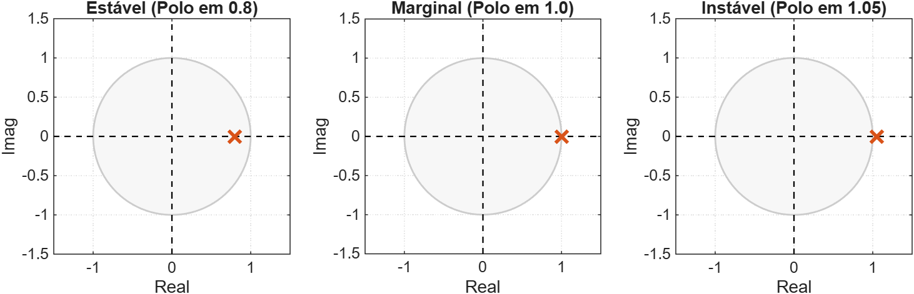
Resposta ao Impulso e Estabilidade
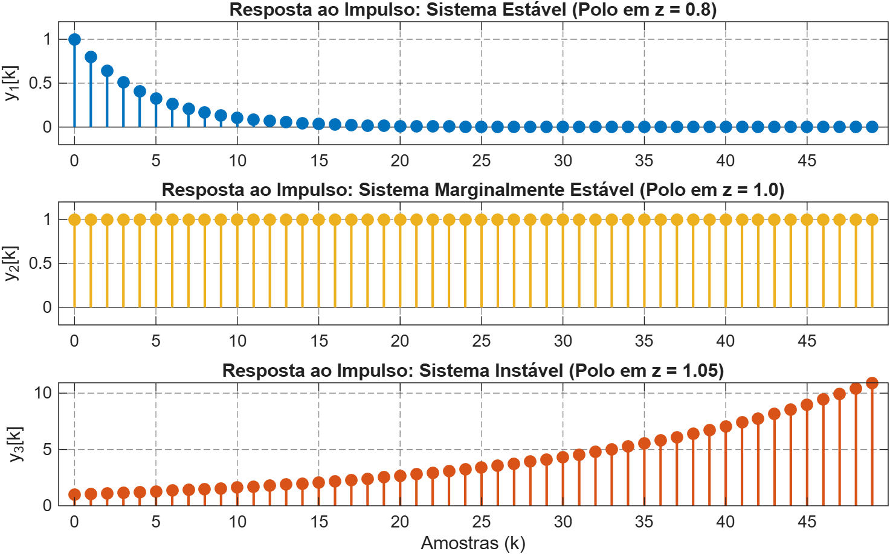
Elementos de Realização do Filtro IIR
O hardware/software do filtro IIR é composto pelos mesmos três elementos, mas inclui realimentação:
- Atrasos ($z^{-1}$): Armazenam amostras passadas de entradas e saídas.
- Multiplicadores: Escalam por $b_i$ (direto) e $-a_j$ (realimentação).
- Somadores: Combinam todos os termos diretos e recursivos.
Estrutura de Realização: Forma Direta
Separação clara entre a parte direta (zeros) e a parte recursiva (polos). Requer $M+N$ atrasos.
A Fase Não-Linear dos Filtros IIR
Diferente dos filtros FIR, os filtros causais IIR não podem apresentar fase linear:
- A presença de polos fora da origem impede a simetria exata de coeficientes necessária para fase linear.
- O atraso de grupo ($\tau_g(\omega)$) varia com a frequência.
- Diferentes componentes de frequência sofrem diferentes atrasos de tempo, causando distorção de fase (dispersão).
Fluxograma do Projeto de Filtros IIR
O fluxo de projeto de um filtro digital IIR a partir de especificações analógicas segue as seguintes etapas principais:
Fluxograma do Projeto de Filtros IIR
O fluxo de projeto de um filtro digital IIR a partir de especificações analógicas segue as seguintes etapas principais:
Projeto de Filtros: Especificações de Desempenho
Projeto de Filtros: Especificações de Desempenho
O projeto de filtros é guiado por um envelope de tolerâncias na magnitude da resposta em frequência $|H(j\omega)|$:
- Banda Passante ($0 \le \omega \le \omega_p$): O ganho deve oscilar no máximo $\delta_p$ em torno de 1 ($1 - \delta_p \le |H(j\omega)| \le 1$).
- Banda de Rejeição ($\omega \ge \omega_s$): A atenuação mínima exige que o ganho fique abaixo de $\delta_s$ ($|H(j\omega)| \le \delta_s$).
- Banda de Transição ($\omega_p < \omega < \omega_s$): Região de decaimento entre a banda passante e a de rejeição.
Parâmetro de ondulação $\epsilon$ e $\delta_p$
O parâmetro de ondulação $\epsilon$ e a tolerância da banda passante $\delta_p$ representam a mesma restrição física sobre o ganho mínimo na banda passante:
Dessa igualdade, derivam-se as relações de transformação:
De $\delta_p$ para $\epsilon$:Parâmetros de Desempenho do Projeto
- Frequências Limites:
- $\omega_p$: Frequência de corte da banda passante (fim da banda passante).
- $\omega_s$: Frequência de corte da banda de rejeição (início da banda de rejeição).
- Tolerâncias de Ganho:
- $\delta_p$ (ou $\epsilon$): Ondulação na banda passante, determinando a variação máxima do ganho.
- $\delta_s$: Atenuação máxima permitida na banda de rejeição.
Esses parâmetros definem as "áreas proibidas" no envelope de resposta do filtro.
Fluxograma do Projeto de Filtros IIR
O fluxo de projeto de um filtro digital IIR a partir de especificações analógicas segue as seguintes etapas principais:
O Filtro Protótipo Passa-Baixas
O projeto de filtros analógicos geralmente parte de um filtro protótipo passa-baixas normalizado, com frequência de corte $\omega_0 = 1$ rad/s:
Fluxograma do Projeto de Filtros IIR
O fluxo de projeto de um filtro digital IIR a partir de especificações analógicas segue as seguintes etapas principais:
O Filtro Protótipo Passa-Baixas
Para alterar a frequência de corte para um valor arbitrário $\omega_c$, realiza-se o mapeamento em frequência substituindo $s \leftarrow \frac{s}{\omega_c}$:
Efeito do Mapeamento de Frequência
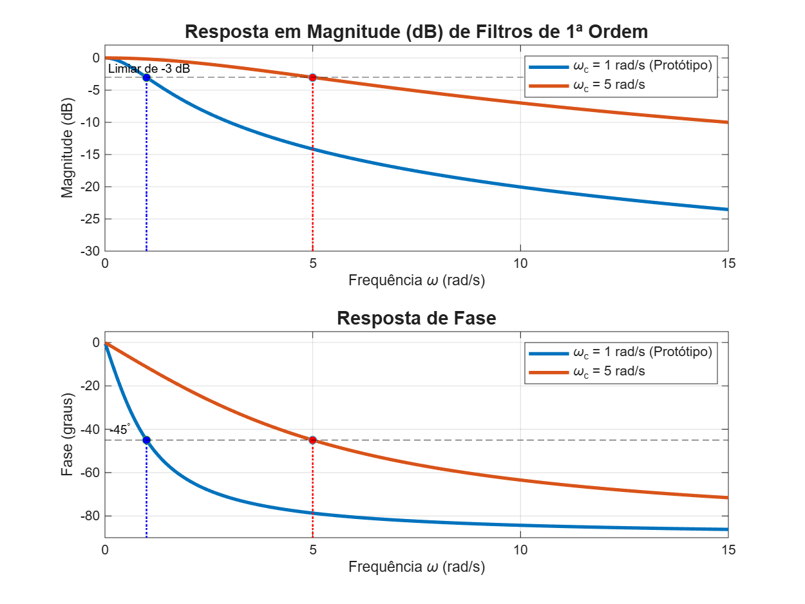
Conversão Passa-Baixas para Passa-Altas
Para converter o filtro protótipo passa-baixas em um filtro passa-altas com frequência de corte $\omega_c$, aplica-se o mapeamento:
Efeito do Mapeamento Passa-Altas
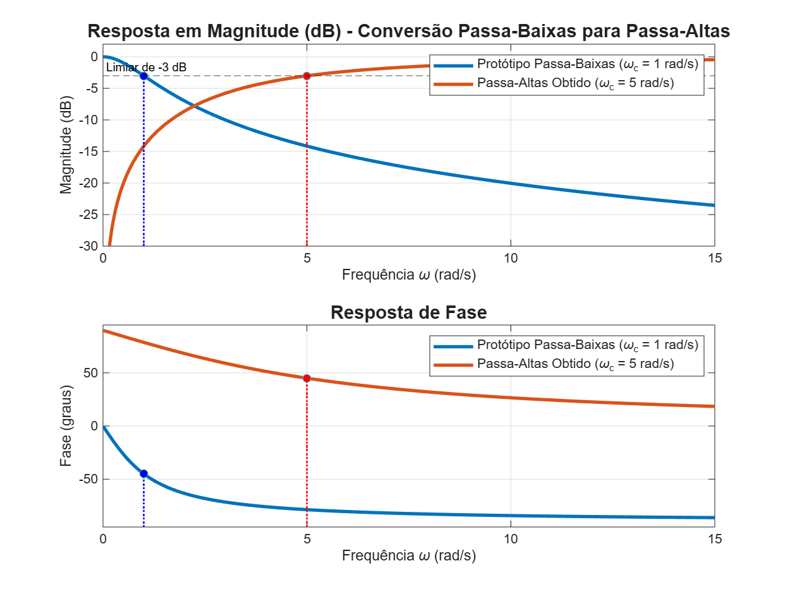
Conversão Passa-Baixas para Passa-Faixa
Para converter o filtro protótipo passa-baixas em um filtro passa-faixa com frequências de corte inferior $\omega_l$ e superior $\omega_h$, aplica-se o mapeamento:
em que $W = \omega_h - \omega_l$ é a largura de banda e $\omega_0 = \sqrt{\omega_h \omega_l}$ é a frequência central.
Conversão Passa-Baixas para Passa-Faixa
Substituindo em $G(s) = \frac{1}{s + 1}$, obtemos a função de transferência do passa-faixa de 2ª ordem:
Efeito do Mapeamento Passa-Faixa
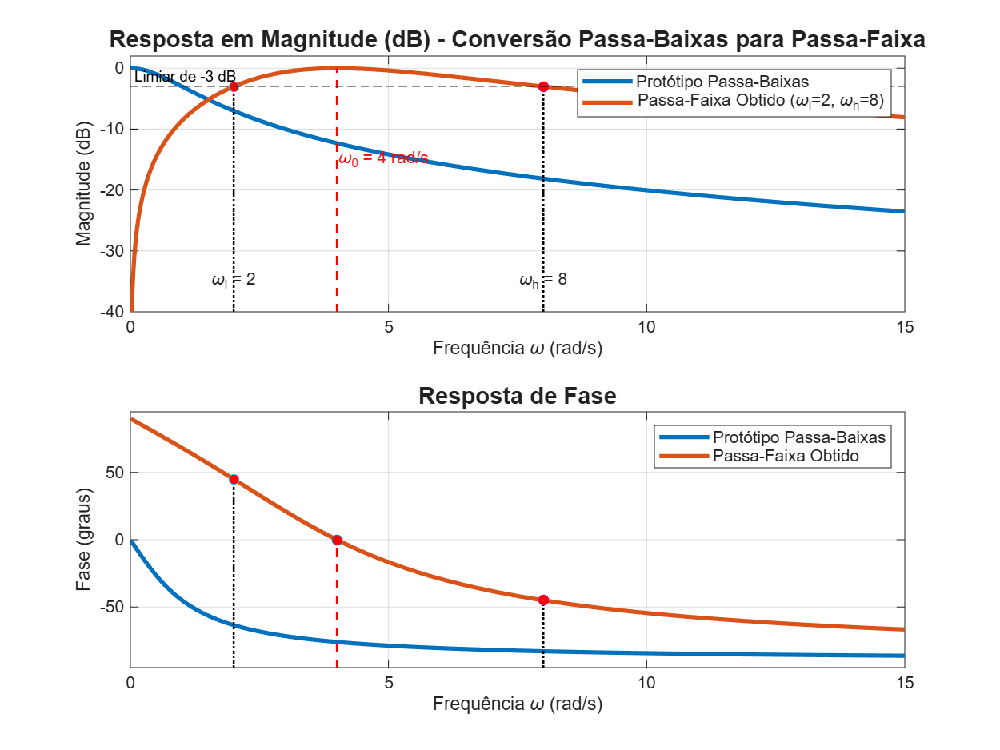
Conversão Passa-Baixas para Rejeita-Faixa
Para converter o protótipo passa-baixas em um filtro rejeita-faixa (notch / bandstop), aplica-se a transformação inversa em frequência:
em que $W = \omega_h - \omega_l$ é a largura de banda e $\omega_0 = \sqrt{\omega_h \omega_l}$ é a frequência central de rejeição.
Conversão Passa-Baixas para Rejeita-Faixa
Substituindo em $G(s) = \frac{1}{s + 1}$, obtemos a função de transferência do rejeita-faixa de 2ª ordem:
Efeito do Mapeamento Rejeita-Faixa
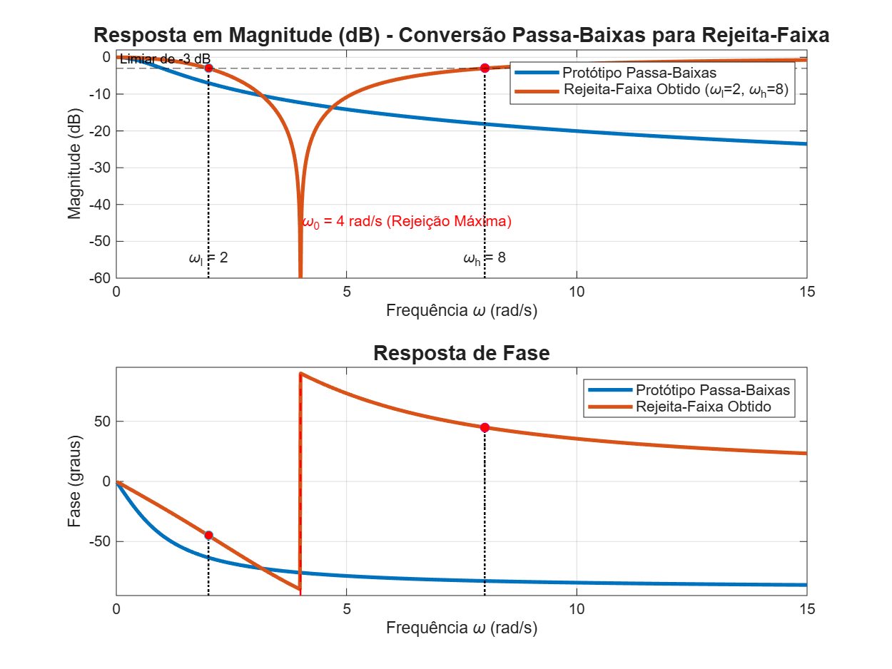
Projeto de Filtros IIR
Filtros IIR digitais são projetados mapeando filtros analógicos clássicos bem conhecidos:
- Butterworth: Resposta de magnitude maximamente plana na banda passante, transição suave.
- Chebyshev Tipo I: Ondulações (ripples) na banda passante, transição mais rápida que Butterworth.
- Chebyshev Tipo II: Ondulações na banda de rejeição, banda passante plana.
- Elíptico (Cauer): Ondulações em ambas as bandas, transição extremamente abrupta (ordem mínima).
Butterworth: Resposta em Frequência
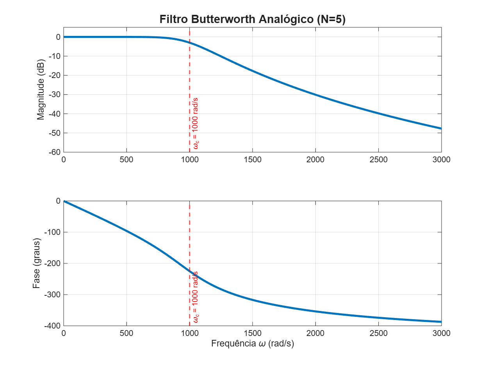
Chebyshev Tipo I: Resposta em Frequência
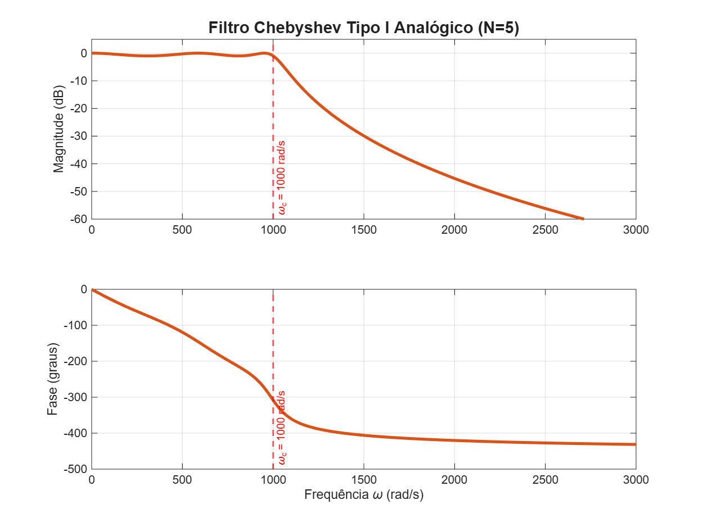
Chebyshev Tipo II: Resposta em Frequência
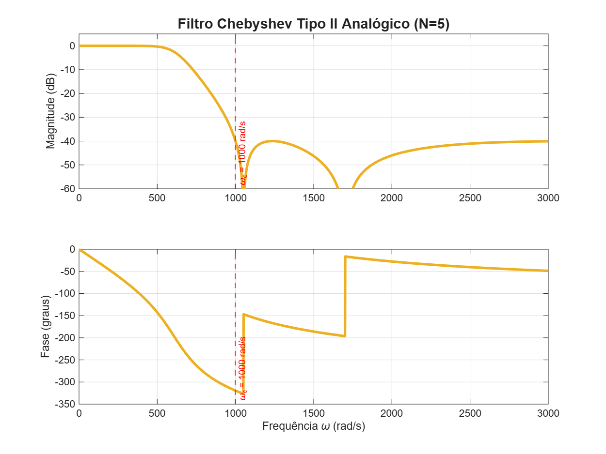
Elíptico: Resposta em Frequência
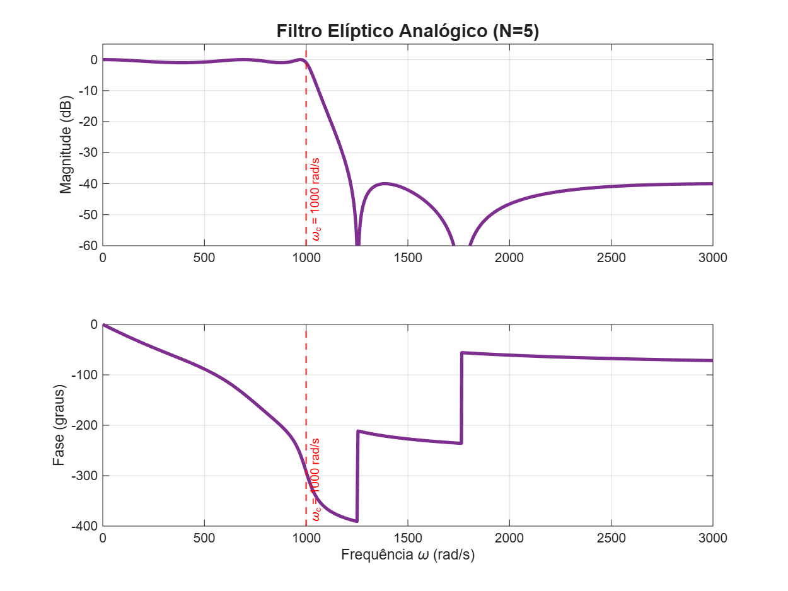
Sobreposição das Respostas (N=5)
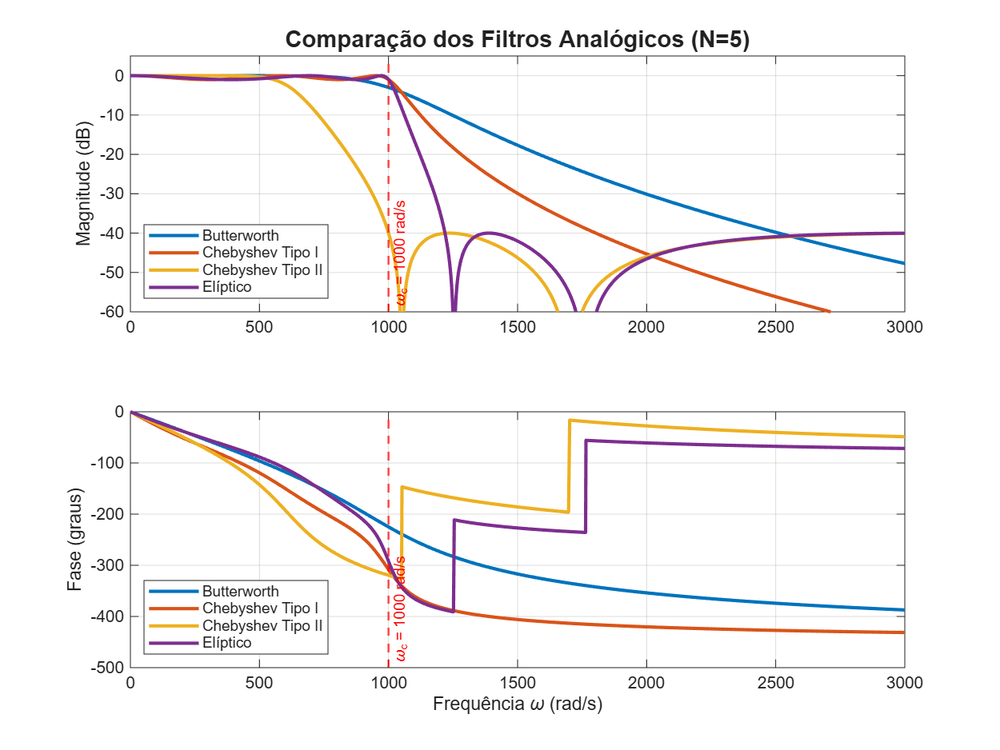
Protótipos Butterworth (Ordem 1, 2 e 3)
Polinômios de Butterworth normalizados para frequência de corte $\omega_0 = 1$ rad/s e ondulação de $3$ dB ($\epsilon = 1$):
- 1ª Ordem:
$G_1(s) = \frac{1}{s + 1}$ - 2ª Ordem:
$G_2(s) = \frac{1}{s^2 + \sqrt{2}s + 1}$ - 3ª Ordem:
$G_3(s) = \frac{1}{s^3 + 2s^2 + 2s + 1}$
Protótipos Chebyshev Tipo I (Ordem 1, 2 e 3)
Polinômios de Chebyshev Tipo I para frequência de corte $\omega_p = 1$ rad/s e ondulação de $3$ dB ($\epsilon = 1$):
- 1ª Ordem:
$G_1(s) = \frac{1}{s + 1}$ - 2ª Ordem:
$G_2(s) = \frac{0{,}5}{s^2 + 0{,}6436s + 0{,}7071}$ - 3ª Ordem:
$G_3(s) = \frac{0{,}25}{s^3 + 0{,}5960s^2 + 0{,}9278s + 0{,}25}$
Protótipos Chebyshev Tipo II (Ordem 1, 2 e 3)
Polinômios de Chebyshev Tipo II (Inverso) para frequência limite de rejeição $\omega_s = 1$ rad/s e atenuação mínima de $\delta_s = 40\text{ dB}$:
- 1ª Ordem:
$G_1(s) = \frac{1}{s + 1}$ - 2ª Ordem:
$G_2(s) = \frac{0{,}3096(s^2 + 2)}{s^2 + 0{,}7288s + 0{,}6192}$ - 3ª Ordem:
$G_3(s) = \frac{0{,}3818(s^2 + 1{,}3333)}{s^3 + 1{,}1639s^2 + 1{,}0441s + 0{,}5090}$
Fluxograma do Projeto de Filtros IIR
O fluxo de projeto de um filtro digital IIR a partir de especificações analógicas segue as seguintes etapas principais:
Discretização
$$ y(t)=\int_{-\infty}^t u(\tau)d\tau $$
Como aproximar essa integral?- Método Euler-Forward;
- Método Euler-Backward;
- Método Tustin.
Método Euler-Forward

Método Euler-Forward
Método Euler-Forward
Método Euler-Backward
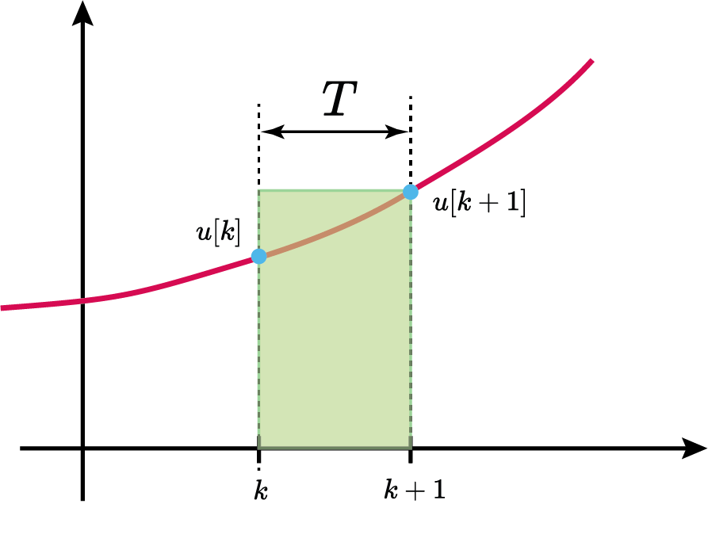
Método Euler-Backward
Método Euler-Backward
$$ s=\frac{z-1}{zT} $$
Método Tustin (Bilinear)
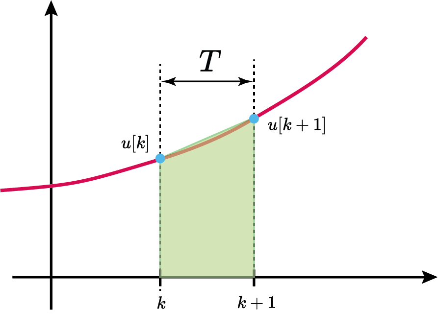
Método Tustin (Bilinear)
Método Tustin (Bilinear)
Equivalência por integração numérica
| Euler-Forward: $$ s=\frac{z-1}{T} $$ | Euler-Backward: $$ s=\frac{z-1}{Tz} $$ | Tustin (Bilinear): $$ s=\frac{2}{T}\frac{z-1}{z+1} $$ |
|
Fluxograma do Projeto de Filtros IIR
O fluxo de projeto de um filtro digital IIR a partir de especificações analógicas segue as seguintes etapas principais:
Implementação
$$ H(z)=\frac{N(z)}{D(z)} $$
em um equação à diferenças$$ y[k]=\sum_{i=0}^M b_ix[k-i]-\sum_{j=1}^N a_jy[k-j] $$
Exemplo: Butterworth Rejeita-Faixa
Projete um filtro digital rejeita-faixa do tipo Butterworth de 2° ordem, com $\omega_0=10rad/s$ e $W=8rad/s$, oscilação da banda de passagem de $3dB$ ($\epsilon=1$) e frequência de amostragem $f_s=1kHz$.
Exemplo: Butterworth Rejeita-Faixa
- Passo 1: Seleção do Protótipo Passa-Baixas ($G(s)$):
$G(s) = \frac{1}{s+1}$ - Passo 2: Mapeamento em Frequência (Passa-Baixas para Rejeita-Faixa):
Substitui-se a variável $s$ do protótipo por:
$s \leftarrow \frac{s W}{s^2 + \omega_0^2}$ em que $W = \omega_h - \omega_l$ e $\omega_0 = \sqrt{\omega_h \omega_l}$. Obtém-se a função analógica final de 6ª ordem $$H_a(s) = G\left(\frac{s W}{s^2 + \omega_0^2}\right)$$
Exemplo: IIR Butterworth Rejeita-Faixa
Passo a passo do projeto de um filtro digital IIR rejeita-faixa (6ª ordem final) a partir de um protótipo Butterworth de 3ª ordem:
- Passo 3: Discretização via Transformação Bilinear (Tustin):
Mapeia-se $H_a(s)$ para o domínio $z$ fazendo a substituição:
$s \leftarrow \frac{2}{T} \frac{1 - z^{-1}}{1 + z^{-1}}$ em que $T$ é o período de amostragem. A função resultante do filtro digital é $$H(z) = H_a\left(\frac{2}{T} \frac{1 - z^{-1}}{1 + z^{-1}}\right)$$
Principais Vantagens do Filtro IIR
- Elevada Eficiência Computacional: Consegue transições espectrais abruptas com ordens muito baixas comparadas aos filtros FIR.
- Menos Memória e Processamento: Exige muito menos multiplicações, somas e atrasos para o mesmo nível de atenuação.
- Baixa Latência: Apresenta menor atraso de grupo na banda passante do que um filtro FIR equivalente de alta ordem.
Limitações e Desvantagens do IIR
- Problemas de Estabilidade: Um filtro IIR mal projetado ou afetado por ruídos numéricos pode tornar-se instável.
- Sensibilidade a Efeitos de Precisão Finita: Erros de arredondamento de coeficientes (quantização) podem deslocar polos para fora do círculo unitário ou gerar oscilações de ciclo limite (limit cycles).
- Distorção de Fase: A fase não-linear causa deformação de formas de onda (crítico em ECG, áudio, etc.).